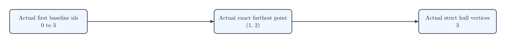
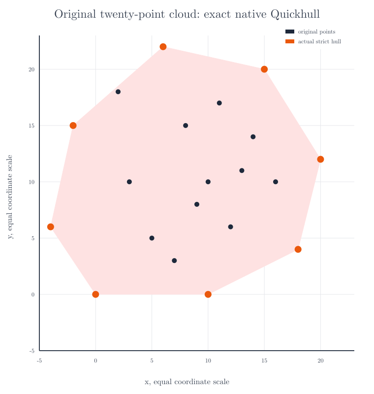
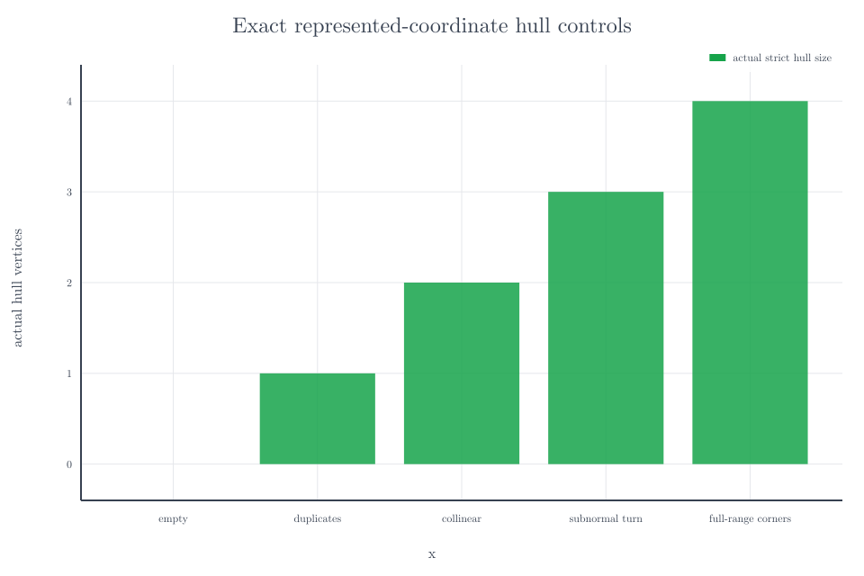
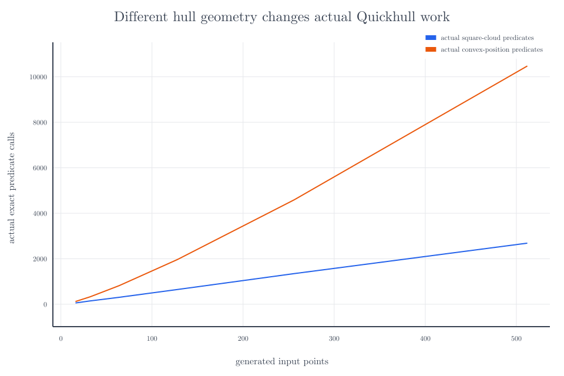

Planar Quickhull: exact farthest decisions and actual candidate sets
Abstract
The convex hull keeps the extreme points of a cloud while discarding its interior and collinear edge points. Planar Quickhull splits at lexicographic endpoints, selects the farthest strict-left point and repeats on two child baselines. Actual native candidate sets now support the method diagram, and exact represented-coordinate predicates protect both side and farthest decisions. The original twenty-point cloud remains the geometric example.
Mechanism and mathematical scope
For a fixed directed baseline \(a\to b\), signed area orders perpendicular distance on its strict-left side. Choosing a maximizer \(c\) leaves only the strict-left sets of \(a\to c\) and \(c\to b\); every other point is inside or on the boundary of triangle \(abc\) and cannot contribute a new strict hull vertex on that side. Inductively concatenating the child chains gives the hull.
The new native area comparator evaluates this expression with exact dyadic integer products, rather than subtracting rounded cross products. Side predicates use the existing exact orientation API. This is exact for stored finite binary64 coordinates, including subnormals and extreme ranges; it cannot undo measurement rounding. Balanced splits often cost \(O(n\log n)\), but the worst case is \(O(n^2)\). An iterative task stack preserves the recursive chain order without risking call-stack overflow.
A tiny actual producing history
The table and native concept diagram read the same producing execution. Every block below is a complete editable C++ program.
#include <dm/dm.hpp>
int main() {
namespace a = dm::algorithms;
namespace g = dm::graphics;
std::filesystem::create_directories("build");
namespace h = dm::geometry;
auto t = h::quickhull_trace({{0, 0}, {2, 0}, {1, 2}, {1, 1}});
const auto &s = t.steps[0];
std::print("\n| actual baseline table ids | farthest id | candidates | left child | right child |\n| " "--- | ---: | --- | --- | --- |\n");
for (const auto &e : t.steps)
std::print("| {} to {} | {} | `{}` | `{}` | `{}` |\n", e.a, e.b,
e.farthest, e.candidates, e.left, e.right);
g::Diagram d;
d.node("n0", {0, 0},
std::format("Actual first baseline ids\n{} to {}", s.a, s.b));
d.node("n1", {10, 0},
std::format("Actual exact farthest point\n({}, {})",
t.points[s.farthest].x, t.points[s.farthest].y));
d.node("n2", {20, 0},
std::format("Actual strict hull vertices\n{}", t.hull.size()));
d.edge("n0", "n1").edge("n1", "n2");
d.save_svg("build/quickhull_tiny.svg");
}| actual baseline table ids | farthest id | candidates | left child | right child |
|---|---|---|---|---|
| 0 to 3 | 2 | [1, 2] | [] | [] |

The retained original experiment
#include <dm/dm.hpp>
int main() {
namespace a = dm::algorithms;
namespace g = dm::graphics;
std::filesystem::create_directories("build");
namespace h = dm::geometry;
const std::vector<h::Point2D> input{{0, 0}, {10, 0}, {18, 4}, {20, 12},
{15, 20}, {6, 22}, {-2, 15}, {-4, 6},
{5, 5}, {10, 10}, {8, 15}, {3, 10},
{12, 6}, {14, 14}, {2, 18}, {16, 10},
{7, 3}, {11, 17}, {9, 8}, {13, 11}};
auto t = h::quickhull_trace(input);
std::vector<double> x, y, hx, hy;
for (auto p : input) {
x.push_back(p.x);
y.push_back(p.y);
}
std::print("\n| actual hull position | x | y |\n| ---: | ---: | ---: |\n");
for (std::size_t i = 0; i < t.hull.size(); ++i) {
hx.push_back(t.hull[i].x);
hy.push_back(t.hull[i].y);
std::print("| {} | {} | {} |\n", i, t.hull[i].x, t.hull[i].y);
}
auto p = g::RPlot::create();
p.size(760, 800).margins(80, 40, 72, 88).x_limits(-5, 23).y_limits(-5, 23).polygon(hx, hy, {254, 226, 226}, true).points(x, y, "original points", {30, 41, 59}, 5).points(hx, hy, "actual strict hull", {234, 88, 12}, 7).title("Original twenty-point cloud: exact native Quickhull").x_label("x, equal coordinate scale").y_label("y, equal coordinate scale");
p.save_svg("build/quickhull_original.svg");
}| actual hull position | x | y |
|---|---|---|
| 0 | 0 | 0 |
| 1 | 10 | 0 |
| 2 | 18 | 4 |
| 3 | 20 | 12 |
| 4 | 15 | 20 |
| 5 | 6 | 22 |
| 6 | -2 | 15 |
| 7 | -4 | 6 |

Explicit controls
#include <dm/dm.hpp>
int main() {
namespace a = dm::algorithms;
namespace g = dm::graphics;
std::filesystem::create_directories("build");
namespace h = dm::geometry;
const double big =
std::numeric_limits<double>::max(), tiny =
std::numeric_limits<double>::denorm_min();
std::vector<std::vector<h::Point2D>> cases{{}, {{0, 0}, {0, 0}},
{{0, 0}, {1, 0}, {2, 0}},
{{0, 0}, {1, 0}, {0, tiny}},
{{-big, -big}, {big, -big},
{big, big}, {-big, big}, {0, 0}}};
std::vector<std::string> labels{"empty", "duplicates", "collinear",
"subnormal turn", "full-range corners"};
std::vector<double> counts;
std::print("\n| actual control | unique points | actual hull vertices | exact predicates |\n| --- | " "---: | ---: | ---: |\n");
for (std::size_t i = 0; i < cases.size(); ++i) {
auto r = h::quickhull_run(cases[i]);
counts.push_back(r.hull.size());
std::print("| {} | {} | {} | {} |\n", labels[i], r.points.size(),
r.hull.size(), r.predicates);
}
auto p = g::RPlot::barplot(counts, labels, "actual strict hull size");
p.title("Exact represented-coordinate hull controls").y_label(
"actual hull vertices");
p.save_svg("build/quickhull_controls.svg");
}| actual control | unique points | actual hull vertices | exact predicates |
|---|---|---|---|
| empty | 0 | 0 | 0 |
| duplicates | 1 | 1 | 0 |
| collinear | 3 | 2 | 3 |
| subnormal turn | 3 | 3 | 6 |
| full-range corners | 5 | 4 | 10 |

Actual selected work and sensitivity
#include <dm/dm.hpp>
int main() {
namespace a = dm::algorithms;
namespace g = dm::graphics;
std::filesystem::create_directories("build");
namespace h = dm::geometry;
std::vector<double> x, y, z;
std::print("\n| generated points | square hull | square predicates | parabola hull | parabola " "predicates |\n| ---: | ---: | ---: | ---: | ---: |\n");
for (int n : {16, 32, 64, 128, 256, 512}) {
auto square =
h::quickhull_run(h::random_point_cloud(n, h::PointCloud::Square, 42));
auto parabola =
h::quickhull_run(h::random_point_cloud(n, h::PointCloud::Parabola,
42));
x.push_back(n);
y.push_back(square.predicates);
z.push_back(parabola.predicates);
std::print("| {} | {} | {} | {} | {} |\n", n, square.hull.size(),
square.predicates, parabola.hull.size(), parabola.predicates);
}
auto p = g::RPlot::create();
p.lines(x, y, "actual square-cloud predicates", {37, 99, 235}).lines(
x, z, "actual convex-position predicates", {234, 88, 12}).title(
"Different hull geometry changes actual Quickhull work").x_label(
"generated input points").y_label("actual exact predicate calls");
p.save_svg("build/quickhull_work.svg");
}| generated points | square hull | square predicates | parabola hull | parabola predicates |
|---|---|---|---|---|
| 16 | 4 | 57 | 16 | 121 |
| 32 | 7 | 146 | 32 | 326 |
| 64 | 7 | 306 | 64 | 819 |
| 128 | 11 | 649 | 128 | 1968 |
| 256 | 12 | 1347 | 256 | 4589 |
| 512 | 14 | 2686 | 512 | 10474 |

API and interpretation
The exact predicates replace the rounded cross and winding arithmetic only for Quickhull; this does not claim a fresh robustness audit of Chan or other geometry routines. Native histories index a sorted unique owned point table. The original shape uses equal numeric and physical scales. Work counters count exact predicate calls, not allocation, sorting comparisons, wall time or low-level integer instructions. The square/parabola fixtures are controlled structural inputs with seed42; their finite curves do not establish a universal expected-time bound.
Reusable producers, fixtures and histories live in the canonical C++ library. Captured records own their values and do not come from a separate report replay. Selected counters and record/scalar policies are specified at their API boundaries; they are not peak-byte or wall-time budgets. Synthetic structural inputs are controlled fixtures for these mechanisms.
References
- Barber, Dobkin and Huhdanpaa, The Quickhull Algorithm for Convex Hulls (1996)
- Shewchuk, robust geometric predicates
Verified in the shared ten-document batch: 108 scoped native cases (22 new plus86 existing; one unchanged Rayleigh failure baseline-confirmed and carried to batch314–323);22 directly instrumented ASan/UBSan cases;91 executable public examples;367/367 full-file definitions plus17/17 common-sampler/engine definitions;10 hovers;32478 independent records/106910 checks;frozen compatibility across all ten families;12 checkout/installed standalone headers and linked consumer;40 executed programs and40 inspected figures with both exports. Legacy retirement follows the completed validation gates.